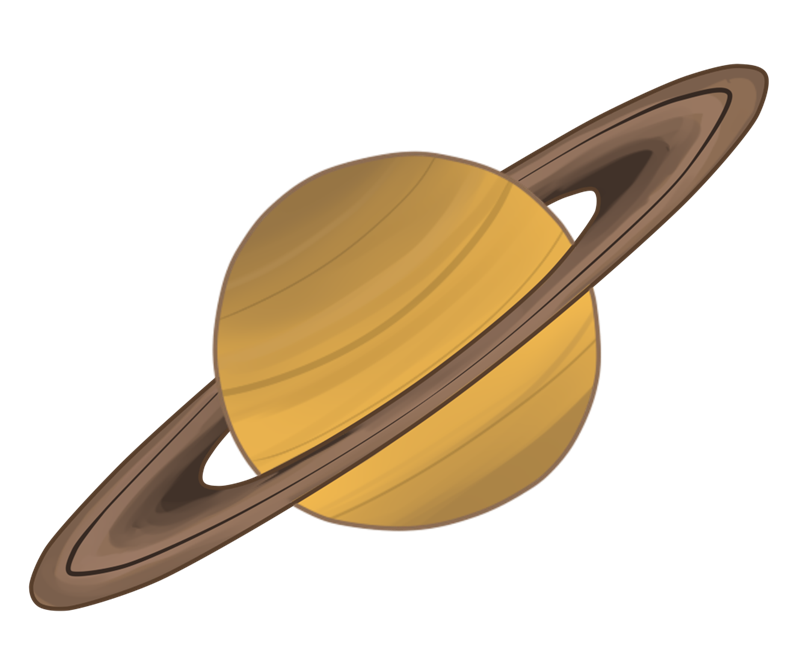

Saturn | Сатурн
Шестая планета солнечной системы - Сатурн.
Вторая по размерам планета и шестая по счёту в Солнечной системе. В сравнении с остальными планетами, наиболее схожа с Солнцем составом химических элементов. Радиус поверхности равен 57350 км, год составляет 10 759 суток (почти 30 земных лет). Сутки здесь длятся немногим дольше, чем на Юпитере – 10,5 земных часов. Количеством спутников он ненамного отстал от своего соседа – 62 против 67. Самым крупным спутником Сатурна является Титан, так же, как и Ио, отличающийся наличием атмосферы. Немного меньше него по размеру, но от этого не менее известные – Энцелад, Рея, Диона, Тефия, Япет и Мимас. Именно эти спутники являются объектами для наиболее частого наблюдения, и потому можно сказать, что они наиболее изучены в сравнении с остальными.
Долгое время кольца на Сатурне считались уникальным явлением, присущим только ему. Лишь недавно было установлено, что кольца имеются у всех газовых гигантов, но у остальных они не настолько явно видны. Их происхождение до сих пор не установлено, хотя существует несколько гипотез о том, как они появились. Кроме того, совсем недавно было обнаружено, что неким подобием колец обладает и Рея, один из спутников шестой планеты.
Created by:
website: Drobkov Kirill
information: Pilyavets Dominik